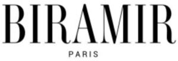

Trade Mark Journal No.2025/033 15 August 2025
WO0000001867287 (25)
Office of origin: United Arab Emirates
Date of International Registration:17 February 2025
Date of designation in the UK:
17 February 2025

International priority date claimed: 20 November 2024
(United Arab Emirates)
- Class 25
- Aprons [clothing], neck scarfs, children's pants [clothing], bandanas [handkerchiefs for the turban], bathrobes, shower sandals, shower slippers, shower caps, bathing pants, swimwear, swimming trunks, beachwear, beach shoes, belts [clothing], money belts [clothing], berets [flat round hats], children's aprons [non-paper], boas [necklaces], bodies [underwear], shoe uppers, shoes, sports shoes, belts [clothing], bras, britches for wearing, camisoles, hat tops, hats [for the head], shower caps, clergy robes, clothing, gymnastics clothing, imitation leather clothing, leather clothing, coats, light coats, collars [clothing], matching outfit [clothing], corsets [underwear for women], corsets [underwear], costumes for ceremonies, sleeves [clothing], cycling clothes, detachable collars, dress shields, dresses, robes, earmuffs [clothing], shoes or sandals of esparto fabric, fishing vests, metal shoe covers, football boots, football boots, footwear, non-electrically heated, shoes, shoes (metal shoe covers for -), shoes (heel pieces for -), shoes (anti-slip devices for -), shoes (tips for -), upper part of shoes, shoe straps, frames (hats -) [frames], fur shawls, fur clothing, gabardine [clothing], galoshes, garter belts, corsets, gloves [clothing], galoshes [rubber boots], robes (decoration -), gymnastic shoes, half shoes, hat frames [frames], hats, hats (paper -) [clothing], garters head [clothing], head accessories for wearing, heel pieces for shoes, heel pieces for socks, heels, head coverings [clothing], knitted clothing, insoles, jackets [clothing], jackets (stuffed -) [clothing], jersey [clothing], jersey dresses, jumpers [sweaters], knitted clothing [clothing], lace shoes, veils [clothing], leg coverings, leggings [leg coverings], leggings [trousers], body linen [clothing], ready-made linings [parts of clothing], maid's uniform, mantillas, mantles, sleep masks, liquor clothing, miters [hats], miters [hats], gloves, driver's clothing, neckties, non-slip devices for shoes and boots, outerwear, overalls, outerwear, pajamas (Am.), trousers, paper clothing, paper hats [clothing], parkas, hat-tips, pelerines, pelisses, petticoats, pinafore dresses, pocket linings [ready-made clothes linings], pockets for clothing, garment pockets, ponchos, pullovers, pajamas, ready-made garments, ready-made linings [parts of clothing], bathrobes, sandals, saris [indian dress], sarongs, dressing belts, scarves, scarves, shawls, dress protectors, shirt fronts, shirts, shoes, short-sleeved shirts, shoulder wraps, bathing caps, singlets, ski boots, ski gloves, skirts, skirts, skull caps, sleep masks, slippers, slips [underwear], smocks, stocking suspenders, socks, shoe insoles, ankle boots, sports shoes, sports shirts, sports shoes, stocking suspenders, socks, heel pieces for socks, sweat-absorbent socks, fur shawls, football boots [with studs], padded jackets [clothing], suits, bathing suits, suspenders, sweat-absorbent underwear, sweaters, swimwear, teddies [underwear], t-shirts, tights, shoe tips, togas, caps, trouser belts, trousers, turbans, underwear, underpants, uniform, shoe uppers, hijabs [clothing], waistcoats, fishing vests, hat tips [hat making], waistcoats, waterproof clothing, shoe belts, hijabs [face veil or hijab], wooden shoes, bracelets [clothing], shirt collars, sweat-absorbent underwear, sun visors, gaiter belts, gaiters.
BITBRIDGE GLOBAL GENERAL TRADING L.L.C